CATALOG
写在前面
FlowShutter 是一个通过记录相机抖动的陀螺仪数据来为无防抖相机手持拍摄的视频增稳处理的硬件设备，其需要搭配相机和 Gyroflow 软件来使用。
请参阅： Gyroflow、FlowShutter 及 flowshutter-FC-size 。
狭义上的 FlowShutter 是指由 @辉光管 与 @DusKing 设计并开源的一块 PCB 板，为行文便利，本文以 FlowShutter PCB 指代上述单块板，以 FlowShutter 指代包括 FC、电池、外壳等在内的整个硬件设备。
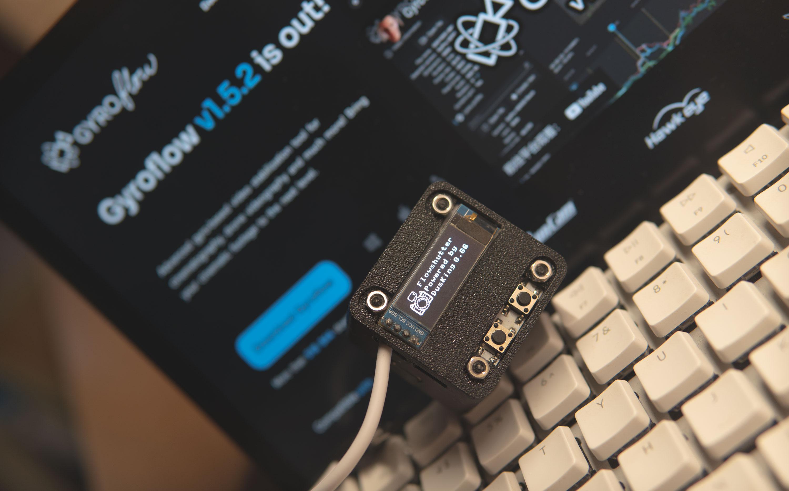
一块 FlowShutter 安装在 @3nit 设计的外壳中
本文将指导你亲手制作一块 Flowshutter，不过此处只简单讨论以下内容：
工作原理
Gyroflow 软件需利用相机在空间坐标系中绕 XYZ 轴的转动信息来对视频画面做稳定化。
FlowShutter 能在相机按下视频录制键的同时开始将陀螺仪数据记录于 Micro SD 卡上，使之在时间上与相机录制的视频保持基本同步，以便 Gyroflow 的处理与文件管理。
组成结构
FlowShutter 主要由两个部分组成：Flowshutter PCB 与 FC（Flight Controller，飞行控制器）。
FC 利用内建的 IMU 获取运动信息并将其通过黑匣数据的方式写入 Micro SD 卡。
FlowShutter PCB 分别通过 MultiPort 和 URAT 同时与相机和 FC 通讯，使二者的视频录制和陀螺仪数据记录同步起始。
优、劣势
这种方法实现的增稳属于电子防抖的一种，然而相较于后期电子增稳处理时所采用的变形稳定器：
- 分析运动所耗费的图形算力较少，增稳的过程更快；
- 能避免前后景别相对运动时变形稳定器导致的畸变拉伸；
- 能利用陀螺仪数据对因为传感器读出延迟导致的果冻效应进行矫正。
但后期增稳的步骤可能会对视频编辑的工作流程产生影响。
请留意：
- 本文适用于具有 MultiPort 的 Sony 相机。如果放弃上述的同步功能，以手动的方式控制陀螺仪数据记录的起始，FlowShutter 可以适用于理论上任何相机。
- 如果你的相机具有陀螺仪防抖功能（如 Sony ZV-E10），那么 FlowShutter 对于你的相机是多余的。（参阅：Supported Cameras/Sony）如果你的机身或镜头具有光学或电子防抖功能，FlowShutter 不能与其叠加作用。
- Gyroflow 不能对变焦镜头的所有焦段都连续地实现增稳。
知识储备
亲手制作一块 FlowShutter，你可能需要了解或掌握这些知识：
- 简单的电路、PCB 设计知识
- 贴片元件焊接的技术
准备材料
- 一台能上网的电脑
- 一台 Sony 相机*
- F4 V3 及以上飞控板（即 FC）*
- Omnibus F4 V3 Plus 选购
- FlowShutter PCB 板及贴片元件*
请参考 嘉立创 中的 BOM 选购 - Sony MultiPort 公口
- MultiPort 公口 9 Pin 选购
- 焊台、焊锡、飞线等焊接用品
- 尼龙/铜柱、螺母、螺丝等（可选）*
- 电池、充电保护板（可选）*
- 3D 打印机或打印好的外壳（可选）
- @3nit 设计的外壳 .stl 文件 下载
- 4GB Mirco SD卡*
*需具有 MultiPort 端口。
*能安装 Betaflight 固件、具有 MicroSD 卡插槽的飞控即可。
*其中的两组贴片开关按需求购买一组即可（两组开关为并联）。
*如需使用 @3nit 设计的外壳，请按照列出的配单购买尼龙/铜柱、螺母、螺丝。
*可采用外置电源 USB 供电的方式。
*可格式化为 FAT32 格式即可，但 Betaflight 仅支持最大 4GB 存储空间。
准备工作
下载项目文件
访问 Github 下载项目并解压缩。
安装 VScode 及 Pymakr 插件
利用 VScode 进行固件刷写，可访问 code.visualstudio.com下载安装。
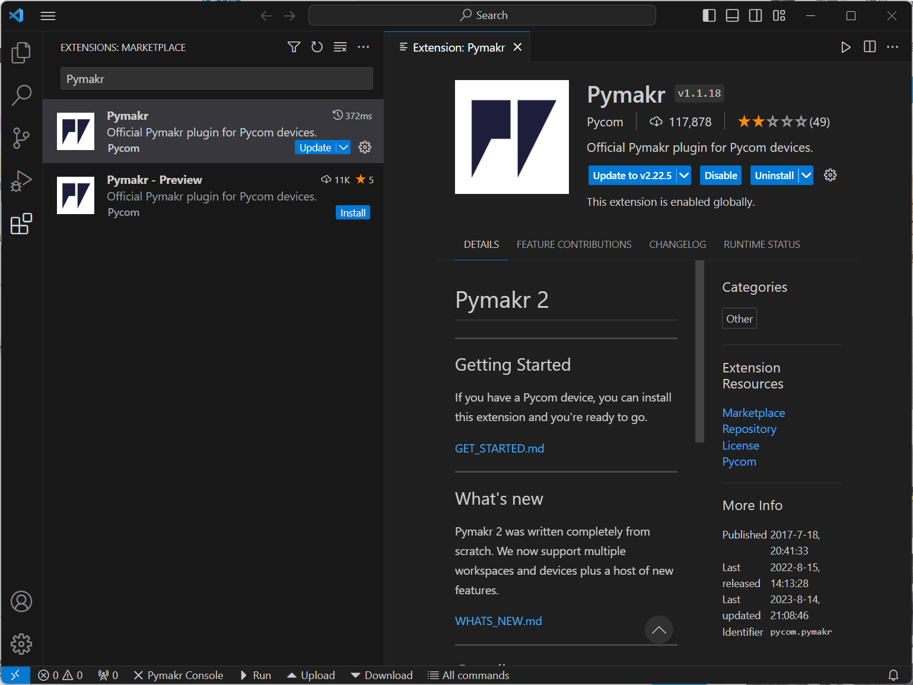
安装完成后，在 VScode 插件库中查找并安装插件 “Pymakr”。
Pymakr 正确安装后，VScode 左下角落处应该显示如图的几个按钮，如果未显示，可以尝试安装该插件的历史版本（经测试，v1.1.18 版本运行正常）。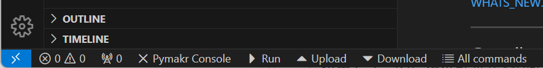
安装 Node.js
访问 nodejs.org下载安装。
配置 Python 开发环境
访问 python.org下载安装。
安装 Betaflight Configurator
访问 betaflight.com下载安装。
安装 GyroFLow
访问 gyroflow.xyz下载安装。
PCB 焊接
请参考 PCB 图焊接好贴片元件、屏幕等。
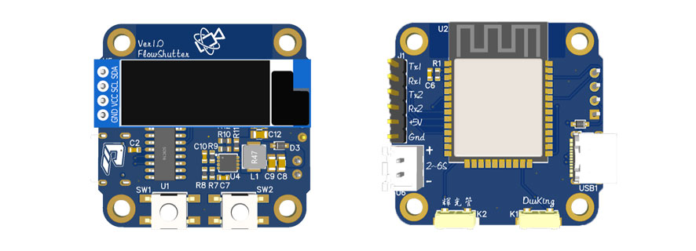
目前 嘉立创 上开源的 PCB 在正反两面分别有一组微动开关（
K1、K2），但这两组开关实际上为分别并联，只需按需求焊接一侧（屏幕一面）的开关即可。
线路焊接
FlowShutter PCB 与 FC 的连接
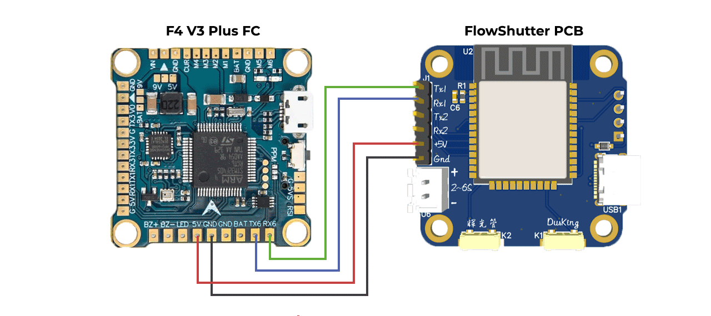
如图，将 FlowShutter PCB 的 Tx1、Rx1 分别与 FC 的一组串口按照 Tx、Rx 对应相连的方式飞线焊接，并将两块 PCB 的 5V 与 GND 分别相连接。
FlowShutter PCB 与相机的线路连接
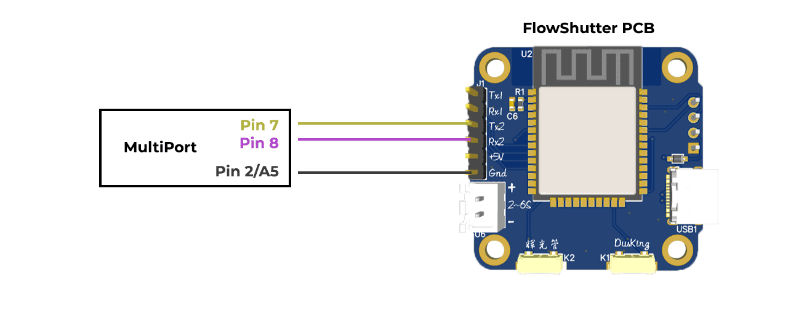
如图，将 FlowShutter PCB 的 Tx2、Rx2 分别与 MultiPort 公头的 Pin 7、Pin 8 对应连接，并将 GND 与 Pin 2 或 Pin A5 相连接。
建议利用内部含有大于 2 条导线的 USB 线缆连接。
如果相机不能正确与 FlowShutter PCB 通讯，请检查
GND是否正确连接。
MultiPort 是 Sony 在 Micro USB 接口的基础上开发的私有协议的接口。关于 MultiPort 有关引脚定义，请参阅：
Sony MultiPort 定义详解
Combined charger and trigger cable for Sony mirrorless cameras like A6400
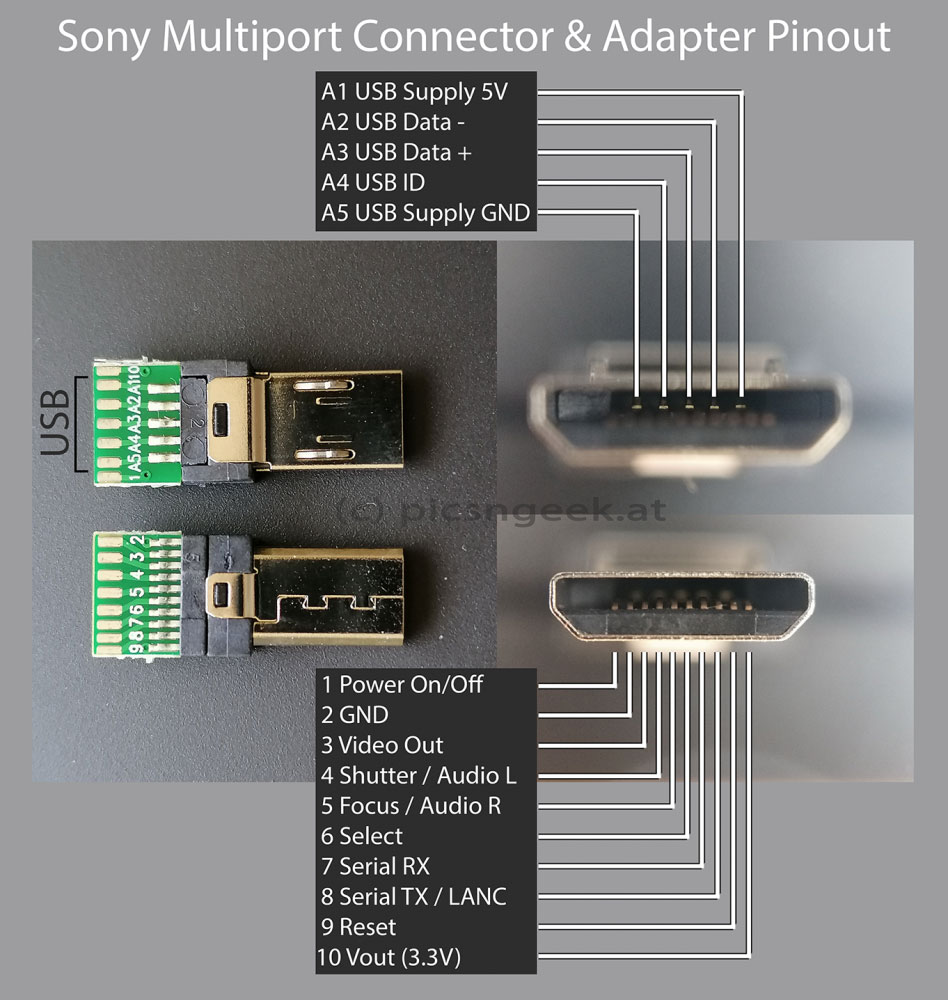
供电线路的连接
如图，将充电板的 OUT+ 串联 拨动开关 与 Flowshutter PCB 的 5V 相连；
将充电板的 OUT- 与 Flowshutter PCB 的 GND 相连；
将电池与充电板相连接。
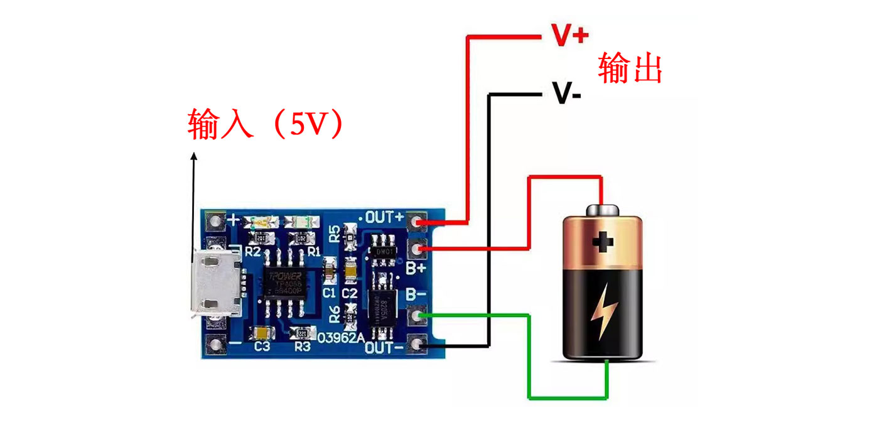
固件刷写与设置
FlowShutter PCB 的固件刷写与设置
将 Flowshutter PCB 通过 USB-C 线缆连接至电脑，设备管理器中应能检测到硬件，记录下 COM 号。
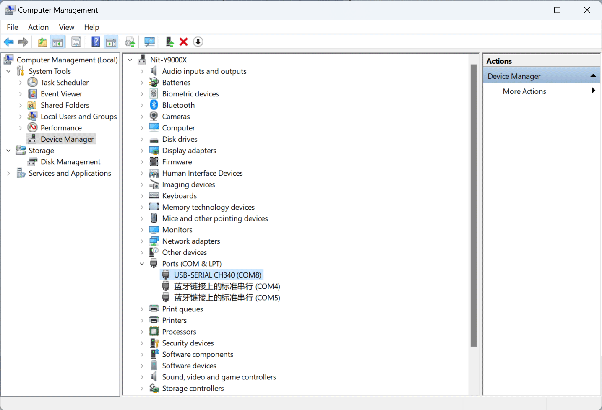
若 FlowShutter PCB 无法正确被电脑识别，请尝试：
- 检查 PCB 焊接、线缆连接。
- 将连接电脑的 USB-C to C 线缆更换为 USB-C to A 线缆。
MicroPython 固件刷写
打开下载好的项目文件夹中 \flowshutter-master\tools\uPyCraft_V1.1.exe。
点击菜单栏中的 Tools -> BurnFirmware ，
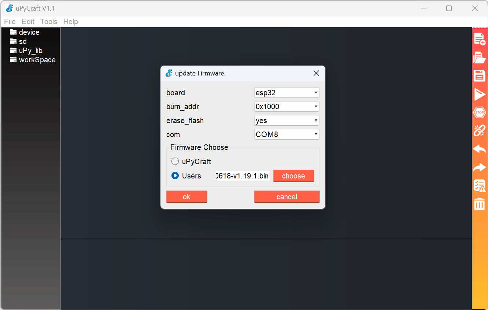
选择 board 为 esp32；burn_addr 为 0x1000；erease_flash 为 yes；com 为设备管理器中显示的对应 COM 号；
在 Firmware Choose 中选择 Users，并选择下载的固件 esp32-20220618-v1.19.1.bin。
点击 ok 开始烧写。并等待烧写完成。
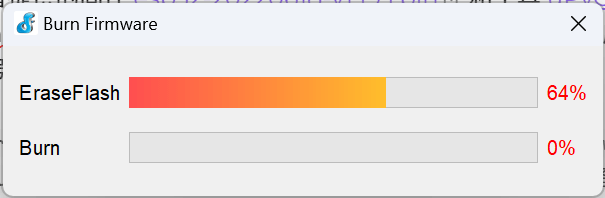
程序烧录
在 VScode 中打开项目文件夹 \flowshutter-master。
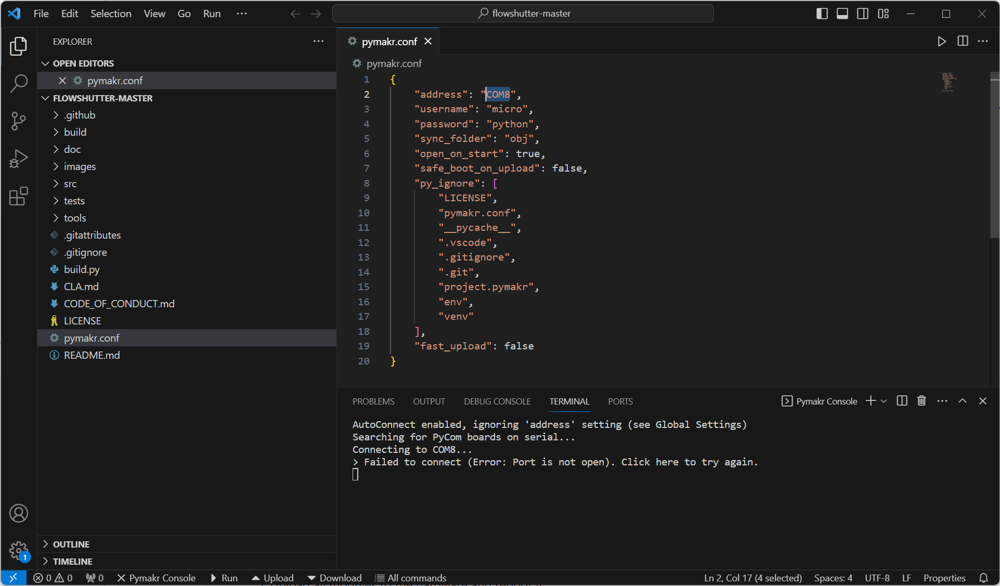
修改 \flowshutter-master\pymakr.conf 中 "address" 为备管理器中显示的对应 COM 号。
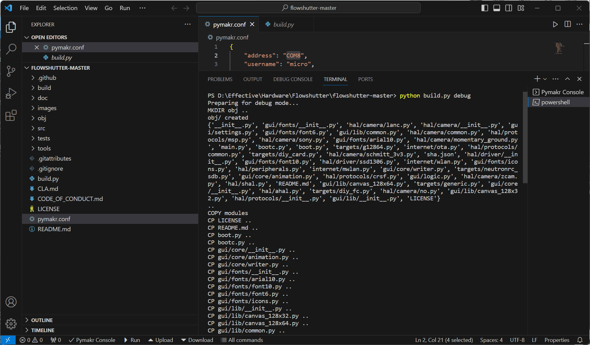
新建 Shell，输入：
python build.py debug
待出现图示输出表明 Debug 模式已就绪。
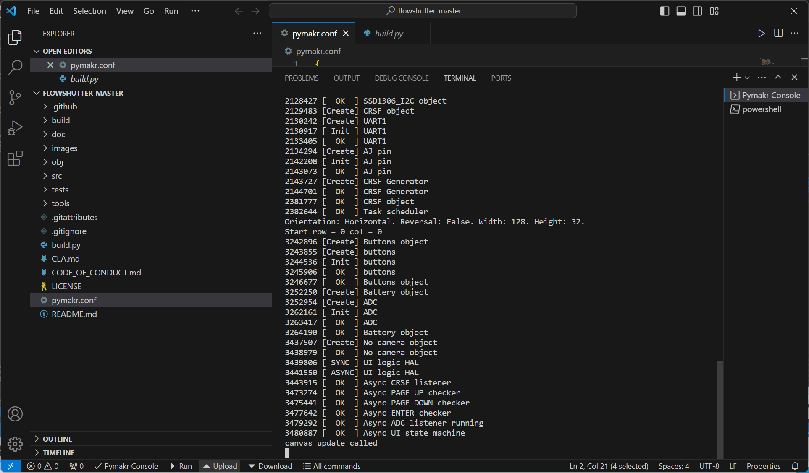
点击窗口左下角的 Upload 将程序烧录至 FlowShutter。当 Pymakr Console 有图示输出，FlowShutter 屏幕亮起时，烧录完成。
Pymakr 正确安装后，VScode 左下角落处应该显示如图的几个按钮，如果未显示，可以尝试安装该插件的历史版本（经测试，v1.1.18 版本运行正常）。
若程序烧录不能正确进行，请检查屏幕排针焊接。
FC 的固件刷写与设置
固件刷写
将 FC 通过 Micro USB 线缆连接至电脑，设备管理器中应能检测到硬件，同时 FC 上的两个发光二极管开始闪亮。
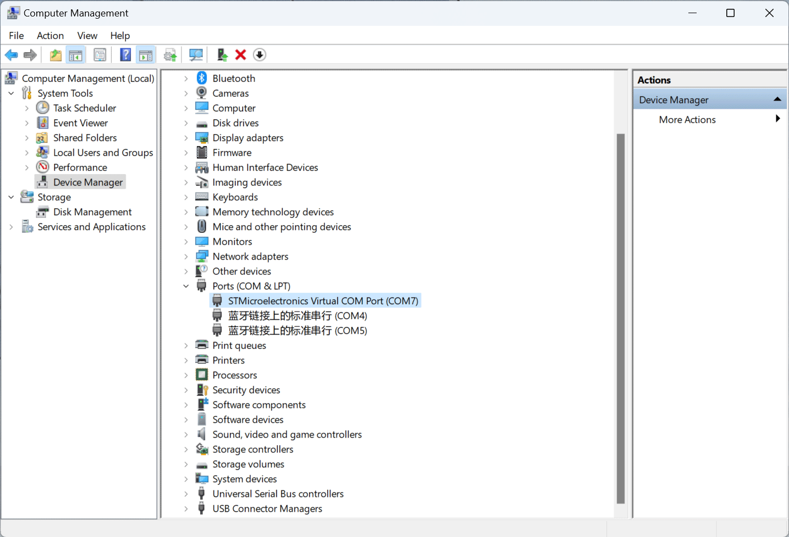
打开 Betaflight Configurator，窗口右上方的下拉菜单中应能显示出 FC 的串口号和名称。
此时断开 FC 与电脑的连接，在按住 FC 上的微动开关的同时重新连接电脑，FC 将进入 BootLoader，此时 Betaflight Configurator 窗口右上方的下拉菜单中应显示 DFU、BootLoader 等字样。
点击左侧菜单中的 Update Firmware，在 Firmware Flasher 中选择你的飞控对应的最新版固件，选择最下方的 Load Firmware (Online)，待下载完成后，点击 Flash Firmware 以刷写固件。
刷写完成后重新拔插 FC，Betaflight Configurator 应能正确检测到 FC。此时固件刷写完成。
FC 出厂时可能会附带固件，但是建议更新到最新版本以避免不需要的 BUG。
固件设置
FC 重启后，点击 Betaflight Configurator 窗口右上方的 connect, 下面将对 FC 做一些简单的设置。
加速度计校准
点击左侧菜单的Setup，将 FC 水平静置，点击 Calibrate Accelerometer ，待校准完成后，移动 FC，可观察到画面中三维模型的运动与 FC 的运动同步。
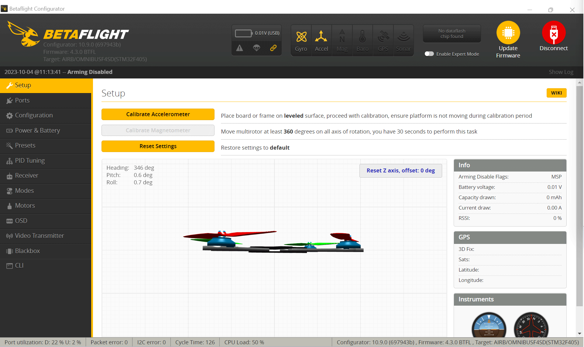
预设应用
点击左侧菜单的Presets，搜索查找 Gyroflow minimum settings，选择该预设，点击Pick应用预设，并点击窗口右下角的Save and Reboot保存
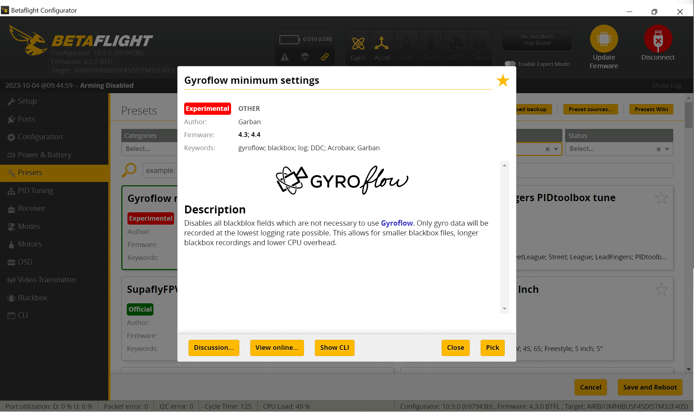
端口设置
点击左侧菜单的Ports，根据 #FlowShutter PCB 与 FC 的连接 中的线路连接，开启对应串口的 Serial Rx 开关，并点击窗口右下角的Save and Reboot保存。
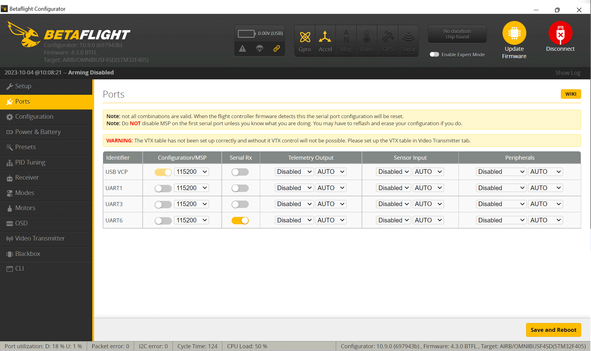
模式设置
点击左侧菜单的Modes，将ARM对应的通道改为AUX 1，并将触发行程调整到1800-2100。
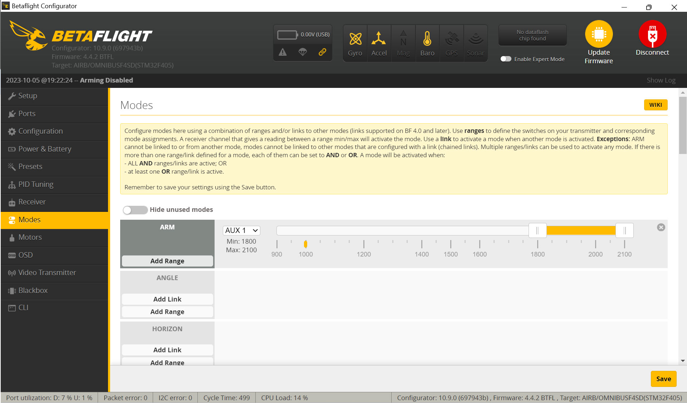
当 FlowShutter PCB 收到开始录制命令时，会通过
AUX 1向 FC 发送 ARM 信号， 其行程为2050。可通过Reciver菜单查看。
Betaflight 固件会在 FC 就绪（ARM）状态下开始记录黑匣子数据，并在取消就绪（DISARM）状态时结束记录。
黑匣子设置
请先将 Micro SD 卡插入 FC。
点击左侧菜单的 Blackbox，在 Blackbox configuration 一栏中，将 Blackbox logging device 选择为 SD Card；Blackbox logging rate 选择最低的 500Hz 即可，点击下方的 Save and Reboot 保存。
在 Onboard SD Card 一栏中，对 SD 卡进行初始化，SD 卡正确配置完成后应当显示为如图界面。
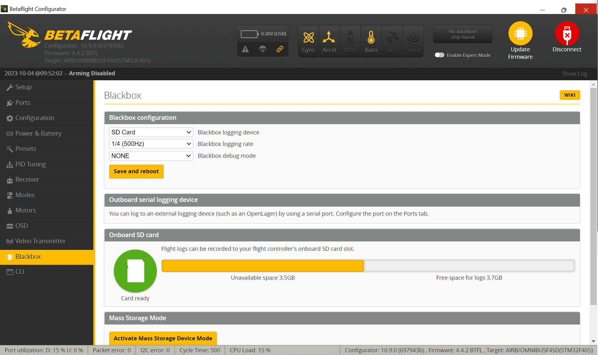
若 SD 卡错误，请将 SD 卡格式化为 FAT32。由于 FC 只能利用到最大 4GB 的储存空间，请选择小容量的 SD 卡。
若你的 FC 具有板载闪存，也可以选择记录黑匣子数据到板载。但板载闪存空间通常较小，当记录满板载闪存后，Betaflight 将暂停记录直至手动释放空间。
外壳安装
请 3D 打印 @3nit 设计的外壳。按照图示顺序自上而下安装。
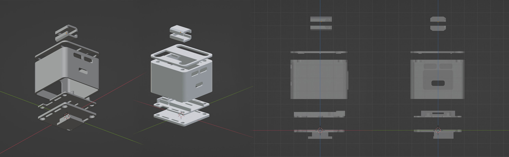
需要先将内部的三层板利用尼龙/铜柱和螺母固定，再套上外壳。
安装时，尽量保证 FC 上的箭头指向水平向前，这会在稳定化时省去一些麻烦。
使用方法
FlowShutter 的设置
拨动开关使 FlowShutter 上电。
单击 左键 查看电压，单击 右键 向 FC 发送 ARM/DISARM 命令。*
长按 左键 进入设置菜单，长按 右键 进入电源菜单。
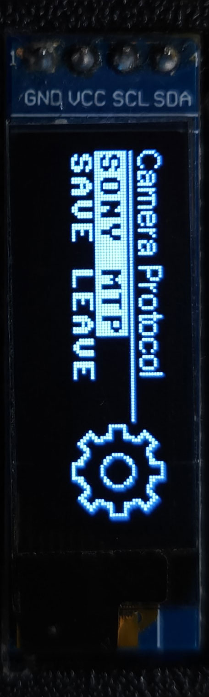
在设置菜单中将 Camera Protocol 改为 SONY MTP ，即可通过相机录制按键控制 FlowShutter。
*当
Camera Protocol为SONY MTP时，单击右键不会向 FC 发送 ARM/DISARM 命令。
视频拍摄
先将 FlowShutter 上电，启动完成后再将 MultiPort 端口接入相机，FlowShutter 屏幕上显示如图所示的 MultiPort 握手界面，此时 FC 单灯常亮。
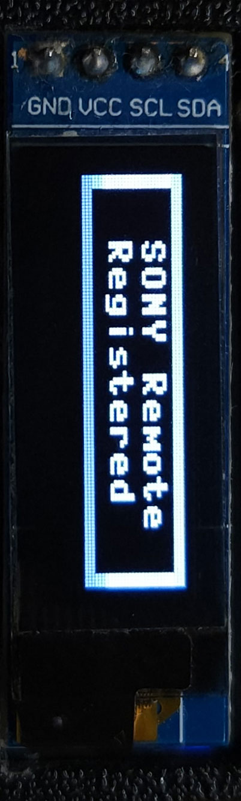
按相机上的录制按钮开始录制，FlowShutter 屏幕显示 FC Armed Recording，此时 FC 由单指示灯常亮变为双指示灯常亮，表明 FC 已开始记录陀螺仪数据；*
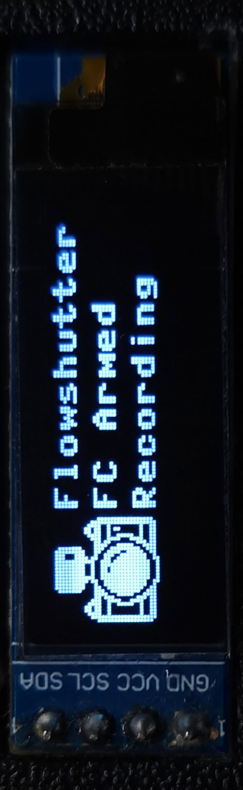
停止录制时，显示 FC Disarmed Camera stop。
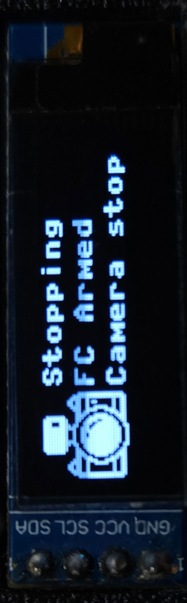
*使用前请将 Micro SD 卡插入 FC，即使未插入 SD 卡，仍然会正常显示显示
FC Armed Recording。
若 FlowShutter 屏幕不断闪烁 MultiPort 握手界面，可能为供电电压不足，请为电池充电。
视频增稳、去果冻效应
分别将相机录制的视频、FlowShutter 记录的 .bfl 文件、镜头配置文件导入 Gyroflow。
点击窗口右上角的 Auto Sync 将视频与运动数据同步，再根据需要调整下方的 Smoothness Rolling shutter correction 等参数后导出视频。
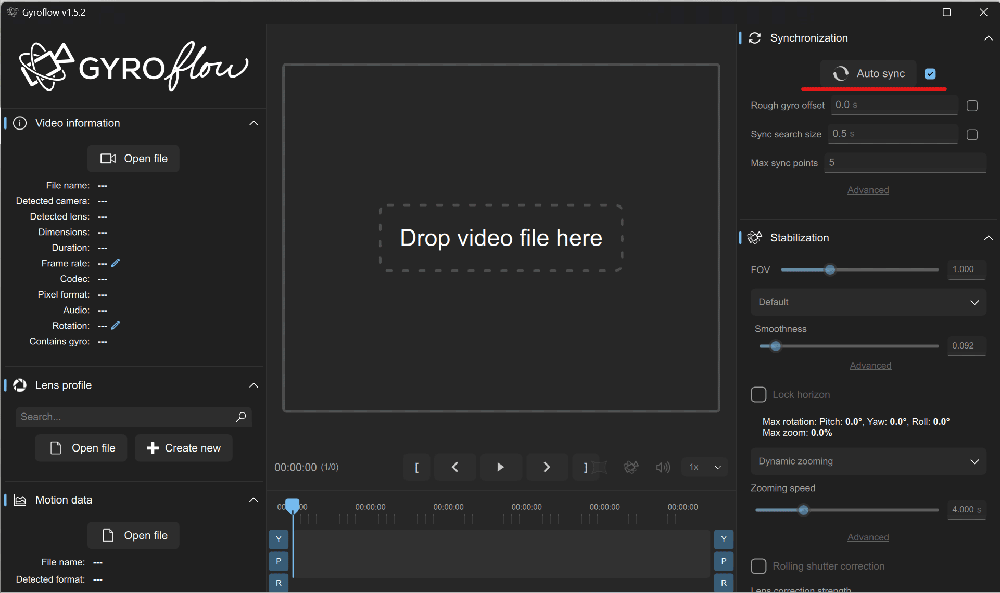
自动同步依赖画面和陀螺仪数据的变化。如果自动同步后视频抖动仍没有明显改善，可通过在时间轴上手动添加同步点的方式微调。
关于镜头配置文件：
- Gyroflow 不能对变焦镜头的所有焦段都连续地实现增稳，通常镜头配置文件会表明其校准的焦段。
- 当相机以不同记录格式录制视频时，其采用的传感器区域有所不同，导致等效焦段的差异，请务必按照记录格式选取镜头配置文件。
问题和讨论
稳定性
目前似乎会偶然性遇到 .bfl 文件只能部分被 Gyroflow 读取的问题。但通过 Betaflight Blackbox Explorer 查看黑匣子数据时却不会出现这个问题。@3nit 目前还没太弄明白。
供电方式
- Sony 相机可通过 MultiPort 对外输出 3.3V 供电，相机开机后会立刻输出 3.3V 供电并尝试与连接的硬件协议握手，这个尝试握手的时间约 323ms*。这要求 FlowShutter 需要在 323ms 启动协议握手程序，但目前开源作者提供的固件启动时间远大于 0.1s，直接由相机供电时，无法完成与相机的握手，必须使用外接电池率先启动 FlowShutter。这一点十分不优雅。
- 可以索性抛弃内置电池，直接采用外置电池（如充电宝）直接同时为相机和 FlowShutter 供电，能大幅延长 FlowShutter 的使用时间。
充电方式
目前 @3nit 的方案将充电保护板内置于 FlowShutter 中，徒增体积和重量。未来打算将电池改为插拔式，并将充电保护板移出 FlowShutter，而作为独立装置。
功耗
目前的开源方案中使用的 OLED 屏幕与 FC 比较耗电，整机功耗约 1W。搭配 250mAh 的锂电池使用时长仅 1h 左右，感觉可用性不是很高。即使能实现机身供电，对相机电池也是不小的压力。
结构设计
@3nit 的外壳设计得比较草率，两侧的强度不高，基本起不到防尘防水作用，也不是很美观，装配过程十分阴间。目前只有采用冷靴固定的方案。
成本
FC 为成本中的主要部分，但利用到的功能很简单，只用来做这个太亏了。百来块钱一个飞控就用来干这个？
难免纰漏，敬请指正！
本文基于开源项目 Gyroflow 及 FlowShutter 撰写。
特别鸣谢 @5V1A 提供技术支持！